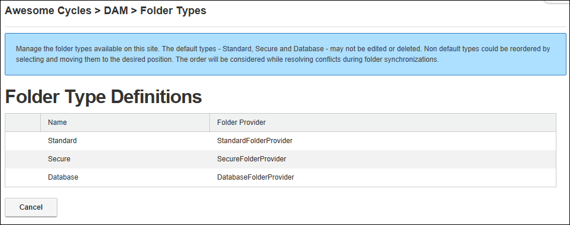

Overview of Folder Types
The Digital Asset Management Pro module comes with the following folder types:
Overview of the folder types:
- Standard - File System: Location to store most of your files. This is the default option.
- Secure - File System: This folder encrypts file names to prevent direct linking to files.
- Secure - Database: Stores files as a byte array in the database rather than in the usual file system.
- Amazon Folder Provider: Stores files on the Amazon service.
- Azure Folder Provider: Stores files on the Azure service.
- UNC Folder Provider: UNC (Universal Naming Convention or Uniform Naming Convention) folders specify the location of resources on a local-area network (LAN) using the following format:\\server-name\shared-resource-pathname.
To view the folder types available on your site:
- Navigate to Admin >
 File Management - OR - Go to a Digital Asset Management Pro module.
File Management - OR - Go to a Digital Asset Management Pro module.
- Select Edit
 >
>  Mange Folder Types from the module action menu.
Mange Folder Types from the module action menu.

The Folder Type Definitions page